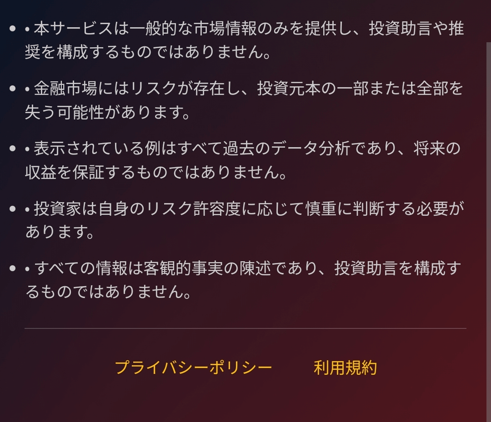
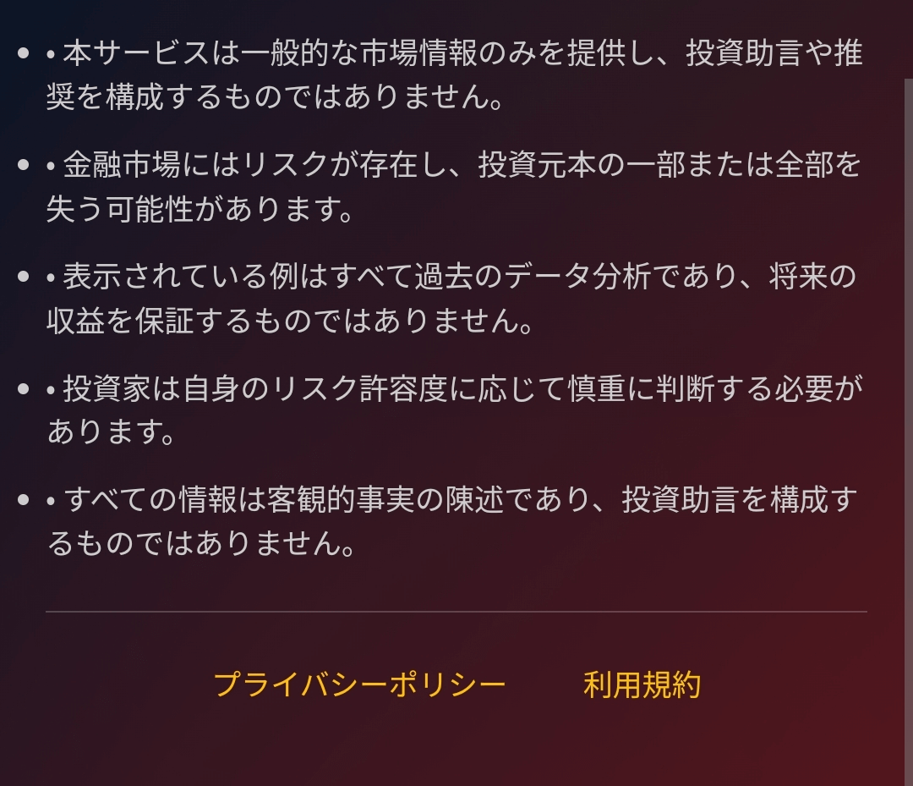

イノベーションエコシステムとスタートアップ企業
日本の経済社会の発展は、以下の側面から概観することができます。
第一に、経済面では、日本は世界第3位の経済大国です。戦後復興と高度成長を経験しましたが、1990年代以降は「失われた20年」に入り、経済成長は鈍化しています。近年、日本は特にハイテクとグリーンテクノロジーの分野において、技術革新と産業高度化を推進することで、経済構造転換を目指しています。
第二に、人口問題は日本が直面する重要な課題です。高齢化と低出生率の継続は、労働力不足と社会保障への負担増大につながっています。政府はこの問題に対処するため、女性の労働市場への参加促進や外国人労働者の導入など、一連の対策を講じています。
社会文化面では、日本は独自の文化と質の高い生活水準で多くの観光客を魅了しています。教育制度は充実しており、国民生活の質は概して高く、社会の安定と調和を促進しています。
さらに、科学技術革新は日本経済の重要な原動力となっています。日本はロボット、自動車、エレクトロニクスといった分野で世界をリードする地位を維持しており、企業や政府は将来の経済成長を促進するために研究開発に積極的に投資しています。
総じて、多くの課題に直面しながらも、日本の経済社会は技術革新、産業構造の転換、そして社会の調和において強い回復力を示し、グローバル化と人口動態の変化がもたらす新たな環境への適応に尽力してきました。